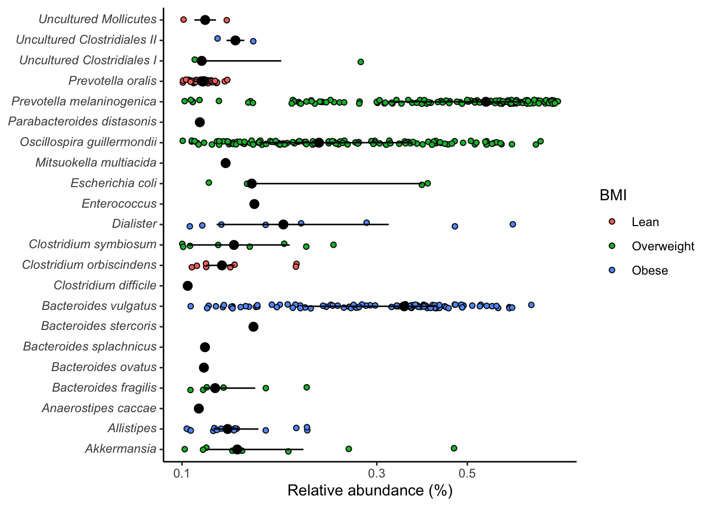

6 Differential Abundance Analysis
6.1 Using difftest from microbial package
The difftest() function from the microbial package serves as a robust solution for conducting differential abundance testing in microbiome data analysis. Its core objective is to identify taxa (such as bacteria and fungi) that demonstrate noteworthy differences in abundance levels across two or more groups of samples.
# Load required packages
library(microbial)
# Perform differential abundance analysis using difftest function
result_difftest <- difftest(ps_raw, group = "nationality")
# View the results
head(result_difftest[, 1:7])
baseMean log2FoldChange lfcSE stat pvalue padj
OTU016 273.896003 -0.45871007 0.1610307 -2.848589 4.391364e-03 8.499414e-03
OTU038 18.625971 0.08889349 0.1401160 0.634428 5.258016e-01 6.504762e-01
OTU055 26.476581 0.44866807 0.1357274 3.305657 9.475402e-04 2.105645e-03
OTU095 8.707940 -1.44945993 0.1622408 -8.934006 4.108545e-19 3.081409e-18
OTU044 7.779078 -1.46593273 0.1931797 -7.588441 3.237768e-14 1.766055e-13
OTU097 1.633998 0.38558799 0.1657909 2.325749 2.003192e-02 3.338653e-02
Sample-1
OTU016 87
OTU038 10
OTU055 15
OTU095 3
OTU044 8
OTU097 1
library(tidyverse)
library(ggtext)
library(microbial)
library(kableExtra)
result_difftest %>%
select(log2FoldChange, pvalue, padj, Significant) %>%
filter(Significant == "check") %>%
filter(padj <= 0.05) %>%
head(10) %>%
kbl(caption = "Differential abundance results") %>%
kable_styling(bootstrap_options = "basic", full_width = F, position = "float_left")| log2FoldChange | pvalue | padj | Significant |
|---|---|---|---|
### Differential abundance plot
library(dplyr)
library(microbial)
difftest_w_metadata <- result_difftest %>%
rename_all(~ make.unique(tolower(.), sep = "_")) %>%
tibble::rownames_to_column("otu") %>%
inner_join(., psmelt(ps_raw), by = c("otu" = "OTU")) %>%
relocate(c(nationality, bmi_group), .after = otu) %>%
mutate(nationality = factor(nationality,
levels = c("AAM", "AFR"),
labels = c("African American", "African")),
bmi_group = factor(bmi_group,
levels = c("lean", "overweight", "obese"),
labels = c("Lean", "Overweight", "Obese"))) %>%
rename_all(~ make.unique(tolower(.), sep = "_")) %>%
select(-phylum_1, -family_1, -genus_1) %>%
distinct(otu, .keep_all = TRUE) %>%
pivot_longer(cols = c("phylum", "family", "genus"), names_to = "level", values_to = "taxon") %>%
mutate(taxon = str_replace(string = taxon,
pattern = "(.*)",
replacement = "*\\1*"),
taxon = str_replace(string = taxon,
pattern = "\\*(.*)_unclassified\\*",
replacement = "Unclassified<br>*\\1*"),
taxon = str_replace_all(taxon, "_", " ")) %>%
filter(padj <= 0.0001) %>%
filter(level == "genus")
difftest_w_metadata %>%
ggplot(aes(y = reorder(taxon, log2foldchange), x = log2foldchange, fill = nationality)) +
geom_col() +
theme_light() +
labs(x = "Log2 Fold Change", y = "", fill = NULL, subtitle = "Differential abundance by nationality") +
theme(axis.text.y = element_markdown(size = 7),
legend.text = element_markdown(size = 7)) +
coord_cartesian(xlim = c(-3, 4))
difftest_w_metadata %>%
ggplot(aes(y = reorder(taxon, log2foldchange), x = log2foldchange, fill = bmi_group)) +
geom_col() +
theme_light() +
labs(x = "Log2 Fold Change", y = "", fill = NULL, subtitle = "Differential abundance by BMI") +
theme(axis.text.y = element_markdown(size = 7),
legend.text = element_markdown(size = 7)) +
coord_cartesian(xlim = c(-3, 4))
save(difftest_w_metadata, file = "data/difftest_w_metadata.rda")Practicing with filtering and pivot_longer()
library(purrr)
library(dplyr)
library(tidyr)
sig_genera <- difftest_w_metadata %>%
arrange(padj) %>%
select(taxon, nationality, bmi_group, basemean, log2foldchange, lfcse, stat, pvalue, padj, "sample-1":"sample-222") %>%
pivot_longer(cols = c("sample-1":"sample-222"), names_to = "sample_id", values_to = "count") %>%
group_by(sample_id) %>%
mutate(rel_abund = count/sum(count)) %>%
ungroup() %>%
dplyr::select(-count) %>%
relocate(sample_id) %>%
filter(rel_abund > 0.1) %>%
filter(padj < 0.01)
head(sig_genera)
# A tibble: 6 × 11
sample_id taxon nationality bmi_group basemean log2foldchange lfcse stat
<chr> <chr> <fct> <fct> <dbl> <dbl> <dbl> <dbl>
1 sample-128 *Bactero… African Am… Overweig… 106. 2.66 0.148 18.0
2 sample-39 *Allisti… African Am… Obese 246. 2.72 0.158 17.2
3 sample-45 *Allisti… African Am… Obese 246. 2.72 0.158 17.2
4 sample-68 *Allisti… African Am… Obese 246. 2.72 0.158 17.2
5 sample-73 *Allisti… African Am… Obese 246. 2.72 0.158 17.2
6 sample-109 *Allisti… African Am… Obese 246. 2.72 0.158 17.2
# ℹ 3 more variables: pvalue <dbl>, padj <dbl>, rel_abund <dbl>
# By nationality
sig_genera %>%
ggplot(aes(x=rel_abund, y=taxon, fill = nationality)) +
geom_jitter(position = position_jitterdodge(dodge.width = 0.8,
jitter.width = 0.5),
shape=21) +
stat_summary(fun.data = median_hilow, fun.args = list(conf.int=0.5),
geom="pointrange",
position = position_dodge(width=0.8),
show.legend = FALSE) +
scale_x_log10() +
scale_color_manual(NULL,
breaks = c(F, T),
values = c("grey", "dodgerblue"),
labels = c("African American", "African")) +
labs(x= "Relative abundance (%)", y=NULL, fill = "Nationality") +
theme_classic() +
theme(
axis.text.y = element_markdown()
)
# By body mass index
sig_genera %>%
ggplot(aes(x=rel_abund, y=taxon, fill = bmi_group)) +
geom_jitter(position = position_jitterdodge(dodge.width = 0.8,
jitter.width = 0.5),
shape=21) +
stat_summary(fun.data = median_hilow, fun.args = list(conf.int=0.5),
geom="pointrange",
position = position_dodge(width=0.8),
show.legend = FALSE) +
scale_x_log10() +
labs(x= "Relative abundance (%)", y=NULL, fill = "BMI") +
theme_classic() +
theme(
axis.text.y = element_markdown()
)
ggsave("figures/significant_genera.tiff", width=6, height=4)